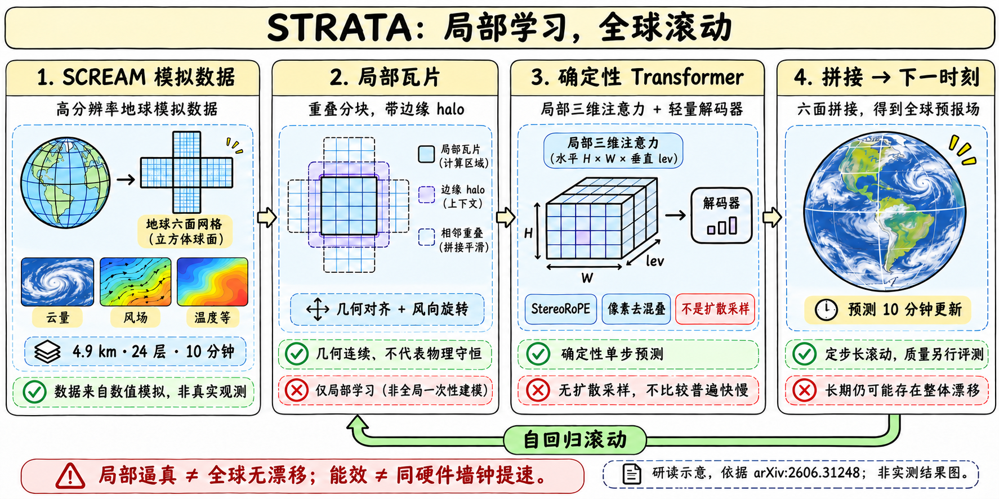
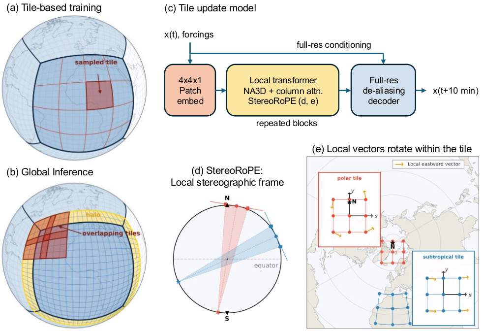
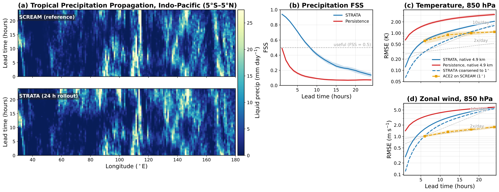

STRATA：局部物理学得好，不等于全球长期无漂移
时间与证据地图
| 证据 | 可确认内容 | 日期边界 |
|---|---|---|
| arXiv2606.31248v1 | 2026-06-30 07:24:33 UTC提交，已明确介绍模型/代码 | 北京时间6/30 15:24:33，作为方法公开日期 |
| 官方HF卡 | Release Date写11/02/2026 planned | 计划日不是实际完成时间 |
| 官方HF API/manifest | 仓库公开、非gated，列出strata_v1.pth与哈希；manifest另写10/23 | 这些信息证明当前有公开包，不证明哪个日期首次对外可下载 |
| GitHub README | 仍写checkpoint将发布、旧临时bundle私有 | 与新官方HF包存在文档滞后，不能照旧路径当公开入口 |
因此这是历史科学模型补漏：主节点6/30，HF包具体首发日待核，不给近30天表捏造一条11/2或11/3新正代。旧名screamcast是同一项目代码包名，非另一个模型。权重约1.24GiB、SCREAM数据约76TB，仅记录文件信息，本轮未下载。

方法：局部瓦片为何能拼成全球
SCREAM原始动力网格约3.3km，但模型使用的physics输出网格约4.9km，6×2048×2048约2520万水平列、24个对流层层级；不能将有效动力分辨率写成模型输入分辨率。推理用128–256像素瓦片及halo，而预训练从64×64开始，生产模型再在128×128微调，不能把论文方法段的128说成全程训练尺寸。
跨cube face时，网格方向跳变，直接拼邻居会把风矢量转错。Duo-grid halo延展当前面的网格并从相邻面的4近邻插值；StereoRoPE把经纬度映到瓦片中心的局部立体投影坐标，同时把U/V风旋转到同一瓦片切平面。位置连续和向量一致缺一不可。

| 层次 | 生产模型设置 | 解决的问题 |
|---|---|---|
| 3D patch | 水平4×4，垂直1层 | 把对流的垂直结构留作空间轴，而非全压成channel |
| backbone | 24层、width1024、16heads、NA3D kernel9 | 局部三维注意力，交替柱向注意力处理垂直过程 |
| pixel decoder | 4层、width128、kernel9 | 双线性上采样+depthwise GELU卷积，AdaLN条件化，减少patch棋盘格 |
| 稳定训练 | QK RMSNorm、head sigmoid gate | BF16训练的logit/梯度稳定，不是扩散去噪 |
| 全局拼接 | overlap加权，Kaiser–Bessel窗口/特殊top-hat裁剪 | 同一时刻所有瓦片融合，再进入下一步 |
DiT是借用的网络形态，STRATA没有扩散采样。报告把patch伪影与线性化迭代的谱半径联系起来，双线性/卷积decoder减轻而非彻底消除所有位置的伪影。分布式halo每步需要通信，不是512张GPU完全互不交流。
数据、损失与多步训练
模型使用三个SCREAM模拟：sdecadal的9天，加DYAMOND1/2各4天，共17天。输入数据覆盖不同时段，却由同一数值模拟器生成，测试是未见时间片而非所有地球气候状态。sdecadal大气初值来自1994年，但海表温度误配2020年；文件/代码标为2020年。这不是两个独立年代的数据集，模型卡与论文对此均有说明。
| 训练部分 | 论文附录E披露 |
|---|---|
| 目标 | 各channel标准化的smooth-L1，δ=1；大多变量预测tendency，ω直接预测state |
| 优化 | AdamW β1=0.9、β2=0.999、weight decay1e-5；8或16 H100 80GB，BF16+compile |
| 生产stage1 | 冻结DiT、warm-up pixel blocks，cosine初始5e-4，6M样本 |
| stage2 | 全层联合微调，cosine初始5e-4，衰减0.3162，12M样本 |
| stage3 | 128×128大瓦片，constant1e-5，1.5M样本 |
| 多步微调 | N=2再N=4，各2000梯度步、LR1e-5；前N−1步no_grad，末步loss |
瓦片样本数不是独立全局天气天数。Scaling sweep的9个DiT-S/M/L配置与最终生产331.7M模型也不同；小模型在低预算下更高效，但较长rollout需要更高计算规模才能开始稳定。
HF wrapper声明149输入channels=145状态+4forcing，148输出=145下一状态+3诊断。论文附录还列cos/sin纬度，以及降水kg m−2 s−1，而HF卡写m/s；纬度可能走独立索引条件，单位可能有转换，本轮未逐张量核对，不直接断言等价或代码错误。实际评测必须固定channels.json、normalization与wrapper版本。
成绩、能耗与失败条件
| 系统 | 硬件/额定功率假设 | 模拟天/墙钟天 | 模拟天/MWh |
|---|---|---|---|
| SCREAM | Frontier，24607kW | 460 | 0.78 |
| STRATA | 16H100=2DGX，20.4kW | 23.6 | 48.1 |
| STRATA | 512H100=64DGX，652.8kW | 741 | 47.3 |
48.1/0.78约61.7倍，论文保守表述>50倍能效；741/460约1.61是不同硬件的吞吐比，不能换成同机提速50倍。功率按满额定值，非完整机房实测电表；数据准备、训练和I/O也不在同一边界。论文正文与CO2附录的SCREAM换算还出现2.01/2.12两个值，本文不用碳量数字替代能耗结论。
强扩展8→512 GPU，邻居P2P约98.4%，all-gather约82.8%，不能把前者泛化所有实现。论文FSS比保持初值的persistence更好，支持组织降水结构的维护；persistence不是全部最先进天气基线。6个12小时间隔初值的阴影是min–max，不是置信区间。

12–24小时大尺度环流误差增长过快，降水有最高约20%干偏差。逐步去除ω的低阶球谐ℓ=0,1,2是显式修正，非模型自发学到全局守恒；无filter时24h降水可跌至约一半。qv非负约束与precip ReLU也属于系统。当前GitHub README披露ice precip为0是checkpoint已知问题，不是正常气象现象；其smoke命令--sht-omega-lmax 0也不等同论文含filter的正式结果。
论文在印尼的未见经纬/斜立体网格做3h定性迁移，不代表所有网格、气候和长期预测都已验证。后续自然方向是耦合粗分辨率全球模型，而不是声称局部模拟器已经替代完整气候模型。
工具使用与研究启发
工程入口叫screamcast，架构已迁到PhysicsNeMo；README的旧私有bundle路径不作为本页下载按钮。官方HF公开包列出checkpoint、normalization和静态forcing。原训练需要多TB数据，本轮只保存可读文本与小型JSON，不运行README中的Docker、下载或训练命令。
一手来源与导航
📊 相关可视化：中文Poster